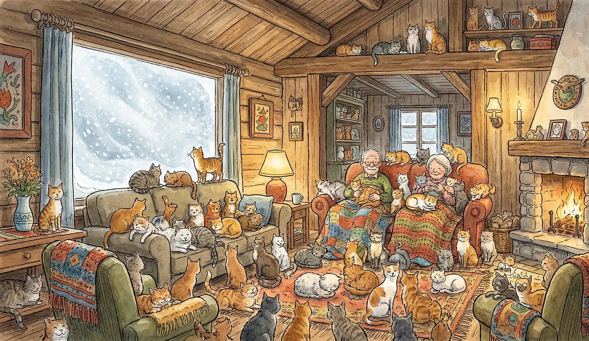

바깥 세상은 하얗게 지워졌고, 거실 바닥은 얼룩덜룩하게 지워졌다.
[The outside world was erased by white, and the living room floor was erased by patches of color.]
이바르는 한 발을 조심스럽게 내디뎠다.
[Ivar carefully took a step.]
발밑에서 나른한 항의의 소리가 났다.
[A lazy sound of protest came from beneath his foot.]
“미안, 올라프.”
[”Sorry, Olaf.”]
그는 검은 꼬리를 밟지 않으려다 중심을 잃고 휘청거렸다.
[Trying to avoid a black tail, he lost his balance and staggered.]
늙은 무릎이 삐걱거렸지만, 바닥으로 넘어지는 대참사는 피했다.
[His old knees creaked, but he avoided the catastrophe of falling to the floor.]
만약 넘어졌다면, 그는 서른 개의 날카로운 놀라움에 찔려 고슴도치가 되었을 것이다.
[Had he fallen, he would have been pricked by thirty sharp surprises and turned into a hedgehog.]
“이바르, 거기 서 있지 말고 이리 와서 앉아요.”
[”Ivar, don’t just stand there, come here and sit.”]
잉그리드의 목소리는 털 뭉치 탑 뒤편에서 들려왔다.
[Ingrid’s voice came from behind a tower of fur balls.]
그녀가 평소 앉는 안락의자는 이미 형체를 알아볼 수 없었다.
[Her usual armchair was already unrecognizable.]
삼색 고양이, 고등어 무늬, 치즈 태비들이 잉그리드의 무릎과 어깨, 심지어 머리 꼭대기까지 점령하고 있었다.
[Calicos, mackerels, and cheese tabbies occupied Ingrid’s knees, shoulders, and even the top of her head.]
그녀는 마치 고양이로 만든 거대한 코트를 입은 여왕처럼 보였다.
[She looked like a queen wearing a giant coat made of cats.]
창밖에서는 노르웨이의 겨울 폭풍이 창문을 부술 기세로 두드리고 있었다. 영하 20도.
[Outside the window, a Norwegian winter storm hammered as if to break the glass. Twenty degrees below zero.]
눈보라가 시야를 가려, 문 앞의 장작 더미조차 보이지 않는 밤이었다.
[It was a night where the blizzard obscured the view, making even the woodpile in front of the door invisible.]
하지만 이 오두막 안은 덥다 못해 끈적거렸다.
[But inside this cabin, it was sticky with heat.]
난로는 꺼진 지 오래였다.
[The stove had been out for a long time.]
서른 개의 작은 심장이 뿜어내는 열기는 그 어떤 자작나무 장작보다 효율적이었다.
[The heat radiating from thirty little hearts was more efficient than any birch firewood.]
이바르가 마침내 기적적으로 확보된 손바닥만한 공간인 소파의 빈 구석에 엉덩이를 붙였다.
[As Ivar finally planted his bottom in an empty corner of the sofa—a miraculously secured space the size of a palm.]
즉시 다섯 마리의 고양이가 액체처럼 흘러내려 그의 허벅지 위로 올라왔다.
[Immediately five cats flowed down like liquid onto his thighs.]
묵직했다.
[It was heavy.]
뼈마디가 쑤시는 무게였지만, 동시에 뼛속까지 데워주는 온기였다.
[A weight that made his joints ache, yet simultaneously a warmth that heated him to the bone.]
“전기가 나갈 것 같네.”
[”Looks like the power is going out.”]
이바르가 중얼거렸다. 전등이 불안하게 깜빡였다.
[Ivar mumbled. The light flickered uneasily.]
“상관없어요.”
[”It doesn’t matter.”]
잉그리드가 고양이 턱을 긁어주며 대답했다.
[Ingrid replied, scratching a cat’s chin.]
“우린 이미 발전소를 서른 개나 가동 중이니까.”
[”We’re already running thirty power plants.”]
파밧.
[Snap.]
세상이 어둠 속으로 잠겼다. 칠흑 같은 어둠.
[The world plunged into darkness. Pitch black.]
하지만 그 어둠은 차갑지 않았다. 오히려 낮은 진동이 공기를 채우기 시작했다.
[But that darkness was not cold. Rather, a low vibration began to fill the air.]
그르릉. 골골골. 그르르릉.
[Purr. Rumble. Purrrrr.]
서른 개의 목구멍이 동시에 울리는 소리는 마치 거대한 디젤 엔진이 부드럽게 돌아가는 소리와 같았다.
[The sound of thirty throats vibrating in unison was like a massive diesel engine humming softly.]
폭풍우 소리는 그 평화로운 소음 벽 너머로 아득해졌다.
[The sound of the storm faded far beyond that peaceful wall of noise.]
이바르는 어둠 속에서 잉그리드의 손을 더듬어 찾았다.
[Ivar fumbled in the dark for Ingrid’s hand.]
그녀의 손은 따뜻했고, 그 위에 얹힌 또 다른 발바닥 젤리는 말랑했다.
[Her hand was warm, and the additional paw jelly resting on top of it was squishy.]
“내일 아침에 문을 열 수 있을까?”
[”Will we be able to open the door tomorrow morning?”]
“못 열면 어때요.”
[”So what if we can’t.”]
잉그리드가 웃음 섞인 목소리로 말했다.
[Ingrid said, her voice laced with laughter.]
“참치 캔은 충분하고, 이 녀석들은 나갈 생각이 없어 보이는데.”
[”We have enough tuna cans, and these guys don’t look like they want to leave.”]
이바르는 눈을 감았다.
[Ivar closed his eyes.]
눈보라 치는 세상의 끝, 고립된 오두막.
[The end of the world in a blizzard, an isolated cabin.]
하지만 이곳은 지구상에서 가장 붐비고, 가장 시끄러우며, 가장 따뜻한 고립이었다.
[But this was the most crowded, loudest, and warmest isolation on Earth.]